Flashier on whitened data + intercept, and the tree example
junmingguan
2026-05-14
Last updated: 2026-05-18
Checks: 7 0
Knit directory: misc/
This reproducible R Markdown analysis was created with workflowr (version 1.7.2). The Checks tab describes the reproducibility checks that were applied when the results were created. The Past versions tab lists the development history.
Great! Since the R Markdown file has been committed to the Git repository, you know the exact version of the code that produced these results.
Great job! The global environment was empty. Objects defined in the global environment can affect the analysis in your R Markdown file in unknown ways. For reproduciblity it’s best to always run the code in an empty environment.
The command set.seed(20251108) was run prior to running
the code in the R Markdown file. Setting a seed ensures that any results
that rely on randomness, e.g. subsampling or permutations, are
reproducible.
Great job! Recording the operating system, R version, and package versions is critical for reproducibility.
Nice! There were no cached chunks for this analysis, so you can be confident that you successfully produced the results during this run.
Great job! Using relative paths to the files within your workflowr project makes it easier to run your code on other machines.
Great! You are using Git for version control. Tracking code development and connecting the code version to the results is critical for reproducibility.
The results in this page were generated with repository version dcb26df. See the Past versions tab to see a history of the changes made to the R Markdown and HTML files.
Note that you need to be careful to ensure that all relevant files for
the analysis have been committed to Git prior to generating the results
(you can use wflow_publish or
wflow_git_commit). workflowr only checks the R Markdown
file, but you know if there are other scripts or data files that it
depends on. Below is the status of the Git repository when the results
were generated:
Ignored files:
Ignored: .DS_Store
Ignored: .Rhistory
Ignored: .Rproj.user/
Ignored: analysis/presentation.html
Ignored: analysis/presentation_files/
Untracked files:
Untracked: Rplots.pdf
Untracked: analysis/eb_ica_backup.Rmd
Untracked: analysis/ebica_math.md
Untracked: analysis/ica_vs_flash_r1_rad copy.Rmd
Untracked: analysis/ica_vs_flash_r1_rad.Rmd
Untracked: analysis/ica_vs_flash_r1_update_2.Rmd
Untracked: analysis/index_bacup.Rmd
Untracked: analysis/preemble.tex
Untracked: analysis/presentation.qmd
Untracked: analysis/references.bib
Untracked: analysis/tree_example.Rmd
Untracked: code/references.bib
Unstaged changes:
Modified: .gitignore
Modified: analysis/eb_ica.Rmd
Modified: analysis/ica_vs_flash_r1_update_1.Rmd
Modified: analysis/ica_vs_flashier_r1_rad.Rmd
Modified: analysis/ica_with_noise.Rmd
Modified: code/ebcd_functions.R
Note that any generated files, e.g. HTML, png, CSS, etc., are not included in this status report because it is ok for generated content to have uncommitted changes.
These are the previous versions of the repository in which changes were
made to the R Markdown
(analysis/flashier_whitened_and_tree_example.Rmd) and HTML
(docs/flashier_whitened_and_tree_example.html) files. If
you’ve configured a remote Git repository (see
?wflow_git_remote), click on the hyperlinks in the table
below to view the files as they were in that past version.
| File | Version | Author | Date | Message |
|---|---|---|---|---|
| Rmd | dcb26df | junmingguan | 2026-05-18 | wflow_publish("analysis/flashier_whitened_and_tree_example.Rmd") |
| html | 6367d26 | junmingguan | 2026-05-17 | Build site. |
| Rmd | f011595 | junmingguan | 2026-05-17 | wflow_publish(c("analysis/index.Rmd", "analysis/flashier_whitened_and_tree_example.Rmd")) |
Introduction and summary
In this analysis, we want to understand two things:
- whether applying whitening, centering, and intercept augmentation can also help rank-1 flashierRad find a true source. We have previously shown that adding an intercept to centered and whitened data helps rank-1 fastICA identify a true source. Therefore, it is reasonable to conjecture that applying the same preprocessing to flashier will also help.
- why there are tiny differences between objectives in the tree example.
For the first question, we again look at the 9-overlapping-group example. I think the answer is yes. flashierRad also seems to be less sensitive to the rank specification in the prewhitening step. However, we do need to specify and fix the residual variance structure, which, based on our data-generating model, seems to be row-specific (see here). Although I set the noise variance to the truth, it can in principle be estimated accurately using, for example, RMT-based estimators. The difficult part is that we also need to set the residual variances for the intercept row. For now, I set it to \(\min{S_{ik}}\) (the minimum residual variance among the non-intercept entries), which works well in our example but does seem a bit arbitrary.
Observations:
- When rank-1 fastICA is applied to whitened data plus an intercept, it can find a solution that maximizes the objective but does not correspond to a true source.
- On the other hand, for both fastICA and flashierRad, it is possible to find binary-like solutions that are highly correlated with one true source, even though the objective is not maximized.
For the second question, my understanding is that the tiny objective differences in the tree example probably come from how directly each tree split is represented in the whitened data with the intercept. Although all solutions have objectives very close to the maximum, they form distinct plateaus: the highest plateau corresponds to the trivial solution, the next to the 2-vs-2 top split, and the lower plateaus to different 1-vs-3 contrasts. The trivial and top-split solutions can be recovered directly from individual rows of the whitened-plus-intercept matrix, while the 1-vs-3 contrasts require combinations of several factors. These combinations are more error-prone, so their fitted values are slightly farther from exact +/-1 vectors, which lowers the log-cosh objective.
library(ebnm)
library(flashier)
library(Matrix)
library(fastICA)Warning: package 'fastICA' was built under R version 4.3.3library(fastTopics)
library(proxy)
Attaching package: 'proxy'The following object is masked from 'package:Matrix':
as.matrixThe following objects are masked from 'package:stats':
as.dist, distThe following object is masked from 'package:base':
as.matrixlibrary(pheatmap)Warning: package 'pheatmap' was built under R version 4.3.3source('code/ebcd_functions.R')
source('code/ica_functions.R')
source('code/ebnm_rademacher.R')
source('code/ebnm_point_rademacher.R')
source('code/utils.R')flash_x_rademacher <- function(X, w, ebnm_fn = ebnm_normal, S = NULL, var_type = 1) {
if (is.vector(w)) w <- matrix(w, ncol = 1)
S_init = t(X) %*% w
A_init = t(solve(crossprod(S_init), crossprod(S_init, t(X))))
if (!is.null(S)) {
var_type = NULL
}
res <- flash_init(X, var_type = var_type, S = S) |>
# flash_set_verbose(0) |>
# flash_add_intercept(rowwise = TRUE) |>
flash_factors_init(
init = list(A_init, S_init),
ebnm_fn = list(ebnm_fn, ebnm_rademacher)
) |>
flash_backfit(verbose = 0)
return(res)
}Rank-1 fastICA vs flashierRad on whitened data with an intercept
K=9
p = 1000
n = 100
set.seed(1)
L = matrix(-1,nrow=n,ncol=K)
for(i in 1:K){L[sample(1:n,20),i]=1}
FF = matrix(rnorm(p*K), nrow = p, ncol=K)
X = L %*% t(FF) + rnorm(n*p,0,0.01)
plot(X %*% FF[,1])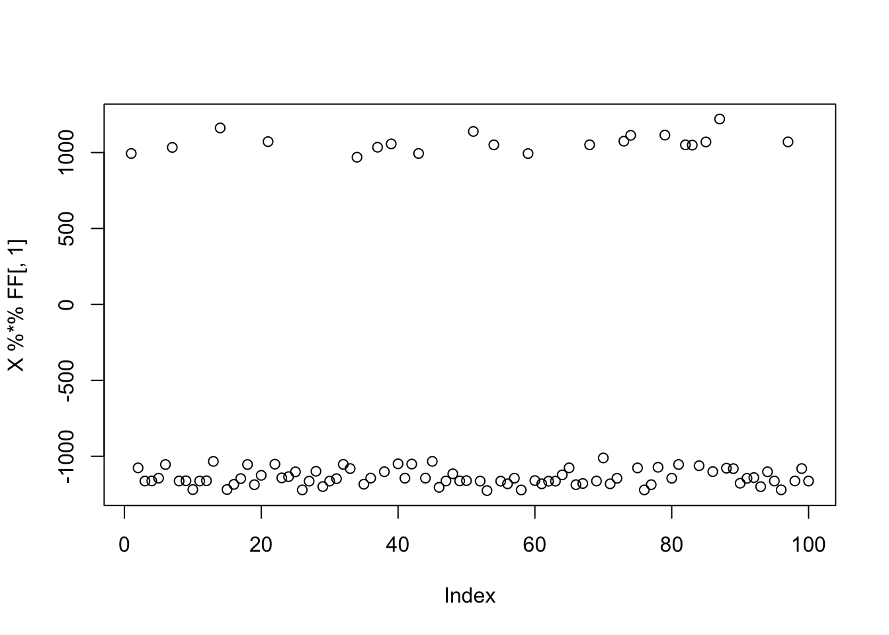
| Version | Author | Date |
|---|---|---|
| 6367d26 | junmingguan | 2026-05-17 |
Noisy case
In this case, we keep more factors than the true rank, so the whitened data still contain substantial noise.
X1 = preprocess(X,n.comp=20)
X1 = rbind(rep(1,ncol(X1)), X1)Vectorized rank-1 fastICA
init_W = matrix(0, ncol = 100, nrow = dim(X1)[1])
for (j in 1:100) {
set.seed(j)
init_W[,j] = rnorm(dim(X1)[1])
}
W = fastica_vectorized_rank_one_update(X1, init_W = init_W, include_G2 = TRUE)
obj = apply(W, 2, FUN = function(w) {compute_objective(X1, w)})
cor_max = apply(W, 2, FUN = function(w) {max(abs(cor(L, t(X1) %*% w)))})
sum(cor_max > 0.9)[1] 17plot(sort(obj))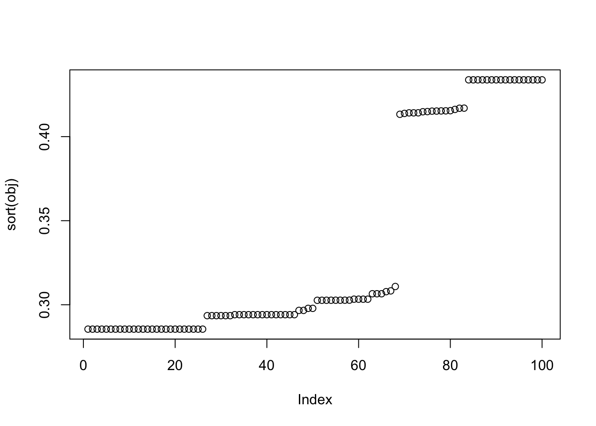
| Version | Author | Date |
|---|---|---|
| 6367d26 | junmingguan | 2026-05-17 |
which(obj > 0.43) [1] 11 13 27 28 31 38 50 52 53 60 62 65 66 74 76 79 87which(cor_max > 0.9) [1] 11 12 13 27 28 31 38 50 52 53 60 62 66 74 76 79 87Lhat = t(t(X1) %*% W)
obj_ = obj[obj>0.43]
Lhat_ = Lhat[obj>0.43, ]
plot_heatmap(t(Lhat_[order(obj_),]))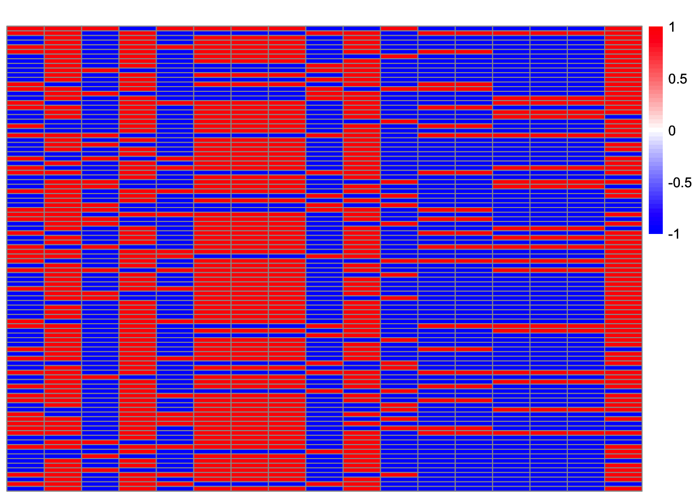
| Version | Author | Date |
|---|---|---|
| 6367d26 | junmingguan | 2026-05-17 |
For seed 12, fastICA finds a Bernoulli-type solution that is highly correlated with a true source, but it does not maximize the objective.
set.seed(12)
init_w = rnorm(dim(X1)[1])
w = fastica_rank_one_update(X1, init_w)
max(abs(cor(L, t(X1) %*% w)))[1] 0.9998218compute_objective(X1, w)[1] 0.310858plot(t(X1) %*% w)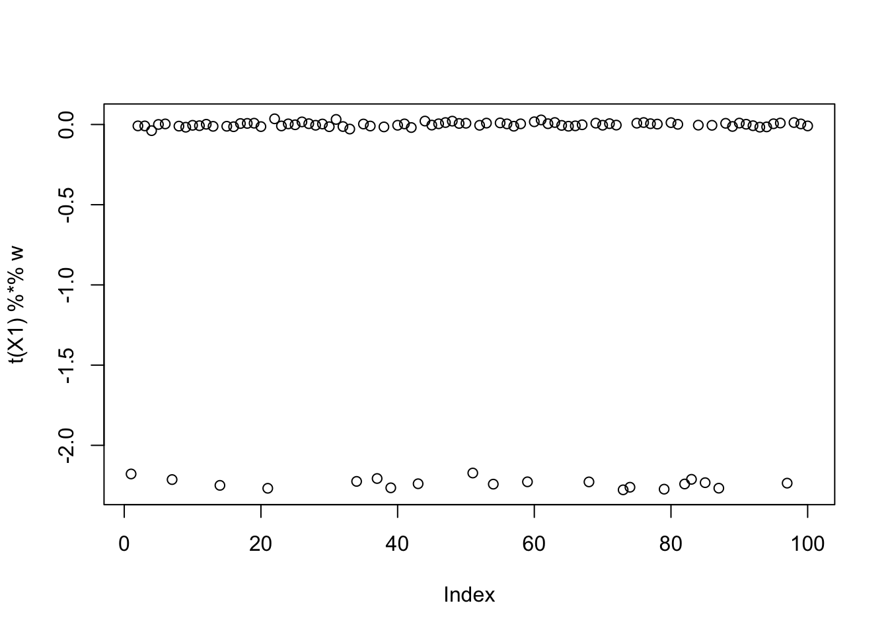
| Version | Author | Date |
|---|---|---|
| 6367d26 | junmingguan | 2026-05-17 |
For seed 65, fastICA finds a binary solution with the maximum objective, but it does not correspond to any true source.
set.seed(65)
init_w = rnorm(dim(X1)[1])
w = fastica_rank_one_update(X1, init_w)
max(abs(cor(L, t(X1) %*% w)))[1] 0.6123724compute_objective(X1, w)[1] 0.4337808plot(t(X1) %*% w)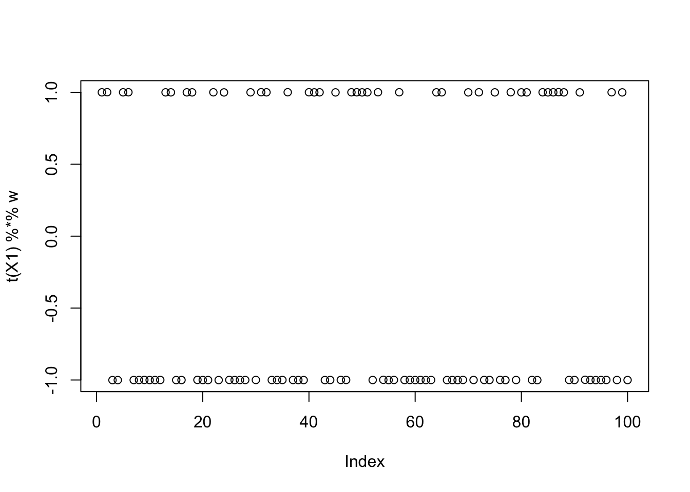
| Version | Author | Date |
|---|---|---|
| 6367d26 | junmingguan | 2026-05-17 |
Whitening + flashierRad
For flashier, we need either to specify the residual variances or to estimate them. Since we apply flashier to the whitened data \(X_1\), I think the correct residual variances are row-specific: for the \((k,i)\)th entry of \(X_1\), the residual SD is
\[ S_{ki} = \sqrt{\frac{\sigma^2(1-1/n)}{d_k}}, \] See the derivation here. Since we add an intercept to \(X_1\), we also need to specify the residual SD for that row. Since the intercept entries are deterministic, ideally their residual SD should be 0; however, this would prioritize these entries when maximizing the ELBO, so we would only get the trivial solution. For now, I set them to \(\min{S_{ki}}\).
flashierRad can now more easily identify a true source. There are cases where the trivial solutions are obtained. Also, for seeds 29, 52, 69, and 90, the solutions are near binary and are highly correlated with one true source, but they do not have the maximum objective values. For example, the objective is 0.3890151 for seed 52.
S = compute_whitened_residual_sd(X, 20, center = TRUE, sigma = 0.01)
S = rbind(rep(min(S), ncol(S)), S)
obj = c()
cor_max = c()
Lhat = matrix(0, nrow = 100, ncol = dim(X1)[2])
for (i in 1:100) {
set.seed(i)
init_w = rnorm(dim(X1)[1])
res = flash_x_rademacher(X1, init_w, S=S, ebnm_fn = ebnm_normal)
cor_max[i] = max(abs(cor(L, t(X1) %*% res$L_pm[,1])))
obj[i] = compute_objective(X1, res$L_pm[,1])
Lhat[i,] = as.vector(t(X1) %*% res$L_pm[,1])
}
# sum(cor_max > 0.9)
plot(sort(obj))
| Version | Author | Date |
|---|---|---|
| 6367d26 | junmingguan | 2026-05-17 |
which(obj > 0.43) [1] 1 2 3 4 7 8 9 12 13 14 16 17 18 19 20 21 23 24 25
[20] 26 27 28 30 31 33 35 36 38 42 43 44 46 47 48 49 50 51 53
[39] 54 56 57 59 60 62 63 64 65 66 67 68 70 71 72 73 74 75 76
[58] 77 78 79 81 82 83 85 87 91 92 93 94 95 96 97 98 99 100cor_max_indx = which(cor_max > 0.9)
length(cor_max_indx)[1] 45cor_max_indx [1] 1 2 8 9 12 16 20 21 24 25 28 29 33 35 36 38 43 46 48 49 51 52 53 56 57
[26] 59 62 67 69 70 71 72 73 75 76 77 78 85 87 90 91 93 96 98 99obj_ = obj[obj>0.43]
Lhat_ = Lhat[obj>0.43, ]
plot_heatmap(t(Lhat_[order(obj_),]))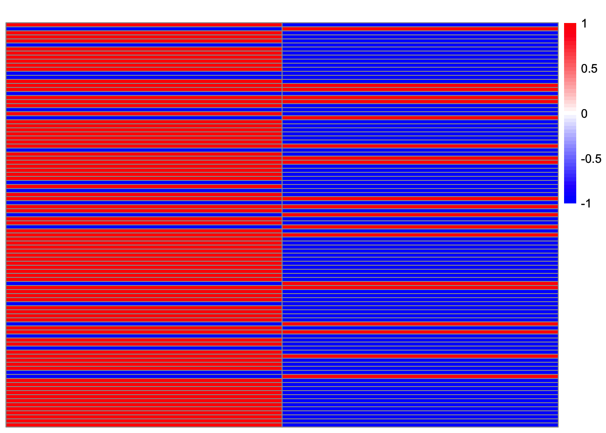
| Version | Author | Date |
|---|---|---|
| 6367d26 | junmingguan | 2026-05-17 |
setdiff(which(obj > 0.43), which(cor_max > 0.9)) [1] 3 4 7 13 14 17 18 19 23 26 27 30 31 42 44 47 50 54 60
[20] 63 64 65 66 68 74 79 81 82 83 92 94 95 97 100setdiff(which(cor_max > 0.9), which(obj > 0.43))[1] 29 52 69 90Solutions that maximize the objective but are not highly correlated with a true source are trivial solutions.
plot_heatmap(t(Lhat[setdiff(which(obj > 0.43), which(cor_max > 0.9)),]))
| Version | Author | Date |
|---|---|---|
| 6367d26 | junmingguan | 2026-05-17 |
Examining seed 4:
set.seed(4)
init_w = rnorm(dim(X1)[1])
res = flash_x_rademacher(X1, init_w, S=S, ebnm_fn = ebnm_normal)
max(abs(cor(L, t(X1) %*% res$L_pm[,1])))[1] 0.002537953compute_objective(X1, res$L_pm[,1])[1] 0.4337808plot(as.vector(t(X1) %*% res$L_pm[,1]))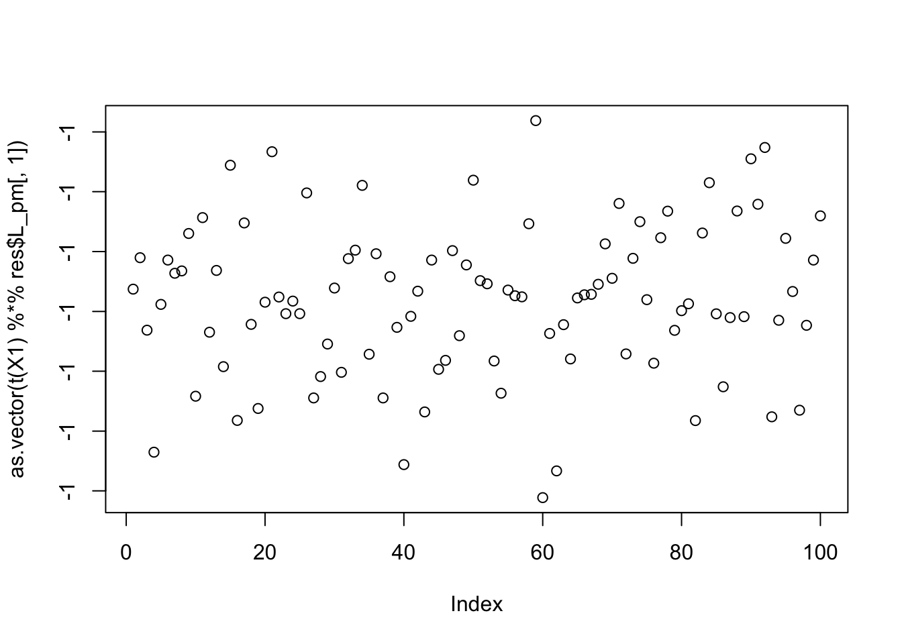
Examining seed 52:
set.seed(52)
init_w = rnorm(dim(X1)[1])
res = flash_x_rademacher(X1, init_w, S=S, ebnm_fn = ebnm_normal)
max(abs(cor(L, t(X1) %*% res$L_pm[,1])))[1] 0.9279034compute_objective(X1, res$L_pm[,1])[1] 0.3890151plot(as.vector(t(X1) %*% res$L_pm[,1]))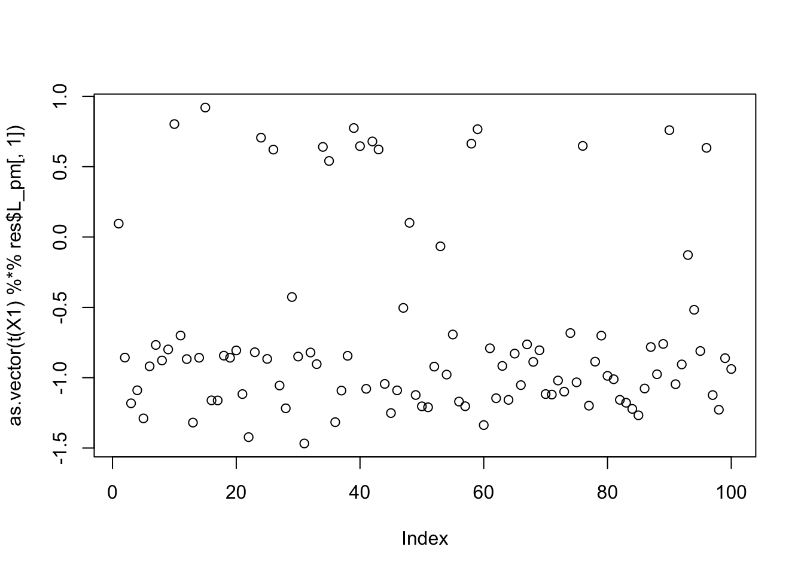
Examining seed 80:
set.seed(80)
init_w = rnorm(dim(X1)[1])
res = flash_x_rademacher(X1, init_w, S=S, ebnm_fn = ebnm_normal)
max(abs(cor(L, t(X1) %*% res$L_pm[,1])))[1] 0.8044144compute_objective(X1, res$L_pm[,1])[1] 0.3715471plot(as.vector(t(X1) %*% res$L_pm[,1]))
| Version | Author | Date |
|---|---|---|
| 6367d26 | junmingguan | 2026-05-17 |
Noise level not fixed
Here, we also consider estimating the noise variance, but the fit is numerically zero.
init_w = rnorm(dim(X1)[1])
res = flash_x_rademacher(X1, init_w, S=NULL, ebnm_fn = ebnm_normal, var_type = 1) --Estimate of factor 1 is numerically zero!sum(abs(res$L_pm))[1] 1.364045e-17Almost noise-free case
In this case, we keep the correct number of factors, so the whitened data can be thought of as noise-free.
X1 = preprocess(X,n.comp=9)
X1 = rbind(rep(1,ncol(X1)), X1)Vectorized rank-1 fastICA
init_W = matrix(0, ncol = 100, nrow = dim(X1)[1])
for (j in 1:100) {
set.seed(j)
init_W[,j] = rnorm(dim(X1)[1])
}
W = fastica_vectorized_rank_one_update(X1, init_W = init_W, include_G2 = TRUE)
obj = apply(W, 2, FUN = function(w) {compute_objective(X1, w)})
cor_max = apply(W, 2, FUN = function(w) {max(abs(cor(L, t(X1) %*% w)))})
sum(cor_max > 0.9)[1] 79plot(sort(obj))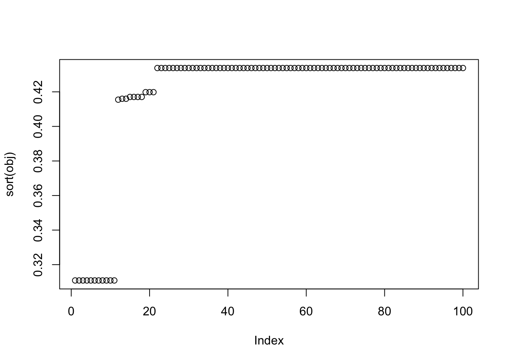
| Version | Author | Date |
|---|---|---|
| 6367d26 | junmingguan | 2026-05-17 |
which(obj > 0.43) [1] 1 2 3 4 5 6 7 8 9 12 14 17 18 19 20 21 23 25 26
[20] 27 28 30 34 35 36 38 39 40 41 42 43 44 47 48 49 50 52 53
[39] 54 56 57 58 59 60 62 63 64 65 66 67 68 69 70 71 72 73 74
[58] 75 78 79 80 81 82 83 85 86 87 88 90 91 92 93 94 95 96 97
[77] 98 99 100which(cor_max > 0.9) [1] 1 2 3 4 5 6 7 8 9 11 12 14 16 17 18 19 20 21 22
[20] 24 25 26 27 28 30 31 34 35 36 38 40 41 42 44 45 46 47 48
[39] 49 50 51 52 53 54 56 57 59 60 62 63 65 66 67 68 69 70 71
[58] 72 73 77 78 79 80 81 84 86 87 88 89 90 91 92 93 94 95 96
[77] 97 99 100Lhat = t(t(X1) %*% W)
obj_ = obj[obj>0.43]
Lhat_ = Lhat[obj>0.43, ]
plot_heatmap(t(Lhat_[order(obj_),]))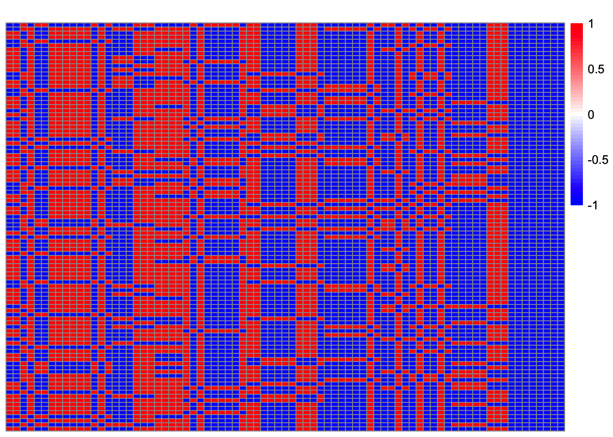
Seeds with solutions that are highly correlated with one true source but have small objectives:
setdiff(which(cor_max > 0.9), which(obj > 0.425)) [1] 11 16 22 24 31 45 46 51 77 84 89Seeds with high objective values that do not correspond to any true source. Some of them correspond to the trivial solution.
setdiff(which(obj > 0.425), which(cor_max > 0.9)) [1] 23 39 43 58 64 74 75 82 83 85 98For seed 11, fastICA finds a Bernoulli-type solution that is highly correlated with a true source, but it does not maximize the objective.
set.seed(11)
init_w = rnorm(dim(X1)[1])
w = fastica_rank_one_update(X1, init_w)
max(abs(cor(L, t(X1) %*% w)))[1] 0.9999999compute_objective(X1, w)[1] 0.3108558plot(t(X1) %*% w)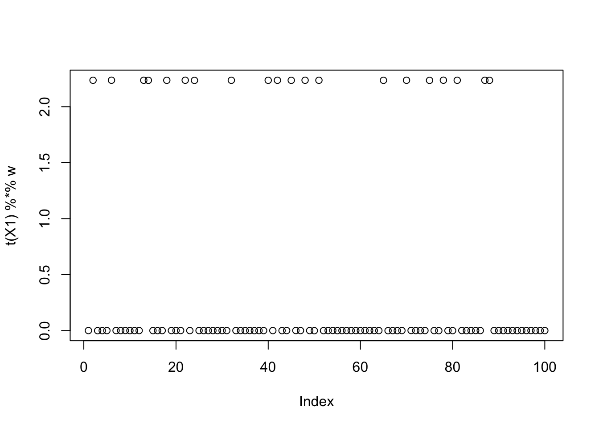
For seed 23, fastICA finds a binary solution that maximizes the objective, but it does not correspond to a true source.
set.seed(23)
init_w = rnorm(dim(X1)[1])
w = fastica_rank_one_update(X1, init_w)
max(abs(cor(L, t(X1) %*% w)))[1] 0.6123724compute_objective(X1, w)[1] 0.4337808plot(t(X1) %*% w)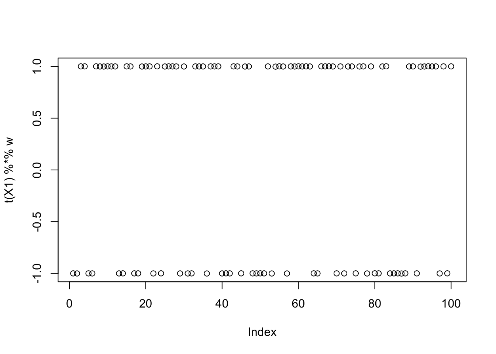
| Version | Author | Date |
|---|---|---|
| 6367d26 | junmingguan | 2026-05-17 |
Whitening + flashierRad
The results are surprisingly similar to the noisy case. There are 46 solutions that are highly correlated with a true source, almost the same number as in the noisy case, but here we have an additional solution, corresponding to seed 80, that finds a true source.
S = compute_whitened_residual_sd(X, 9, center = TRUE, sigma = 0.01)
S = rbind(rep(min(S), ncol(S)), S)
obj = c()
cor_max = c()
Lhat = matrix(0, nrow = 100, ncol = dim(X1)[2])
for (i in 1:100) {
set.seed(i)
init_w = rnorm(dim(X1)[1])
res = flash_x_rademacher(X1, init_w, S=S, ebnm_fn = ebnm_normal)
cor_max[i] = max(abs(cor(L, t(X1) %*% res$L_pm[,1])))
obj[i] = compute_objective(X1, res$L_pm[,1])
Lhat[i,] = as.vector(t(X1) %*% res$L_pm[,1])
}
# sum(cor_max > 0.9)
plot(sort(obj))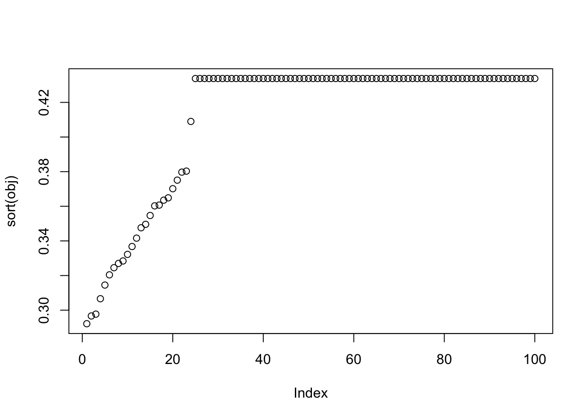
which(obj > 0.43) [1] 1 2 3 4 7 8 9 12 13 14 16 17 18 19 20 21 23 24 25
[20] 26 27 28 30 31 33 35 36 38 42 43 44 46 47 48 49 50 51 53
[39] 54 56 57 59 60 62 63 64 65 66 67 68 70 71 72 73 74 75 76
[58] 77 78 79 80 81 82 83 85 87 91 92 93 94 95 96 97 98 99 100which(cor_max > 0.9) [1] 1 2 8 9 12 16 20 21 24 25 28 29 33 35 36 38 43 46 48 49 51 52 53 56 57
[26] 59 62 67 69 70 71 72 73 75 76 77 78 80 85 87 90 91 93 96 98 99obj_ = obj[obj>0.43]
Lhat_ = Lhat[obj>0.43, ]
plot_heatmap(t(Lhat_[order(obj_),]))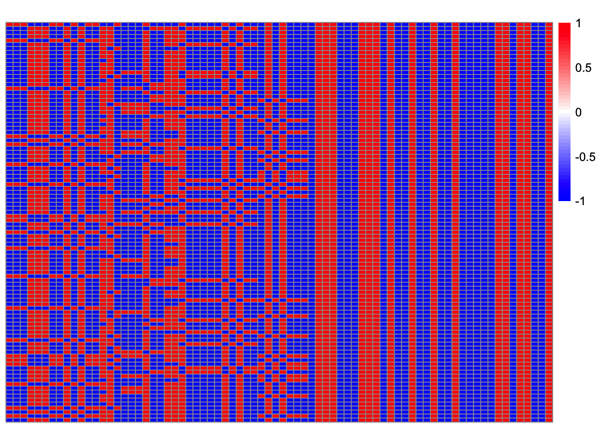
setdiff(which(cor_max > 0.9), cor_max_indx)[1] 80setdiff(which(obj > 0.43), which(cor_max > 0.9)) [1] 3 4 7 13 14 17 18 19 23 26 27 30 31 42 44 47 50 54 60
[20] 63 64 65 66 68 74 79 81 82 83 92 94 95 97 100setdiff(which(cor_max > 0.9), which(obj > 0.43))[1] 29 52 69 90Solutions that maximize the objective but are not highly correlated with a true source are trivial solutions.
plot_heatmap(t(Lhat[setdiff(which(obj > 0.43), which(cor_max > 0.9)),]))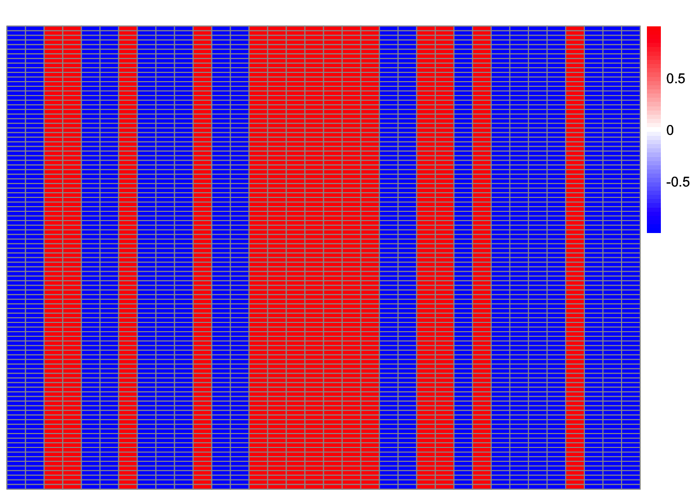
| Version | Author | Date |
|---|---|---|
| 6367d26 | junmingguan | 2026-05-17 |
Examining seed 4:
set.seed(4)
init_w = rnorm(dim(X1)[1])
res = flash_x_rademacher(X1, init_w, S=S, ebnm_fn = ebnm_normal)
max(abs(cor(L, t(X1) %*% res$L_pm[,1])))[1] 0.5459187compute_objective(X1, res$L_pm[,1])[1] 0.4337808plot(as.vector(t(X1) %*% res$L_pm[,1]))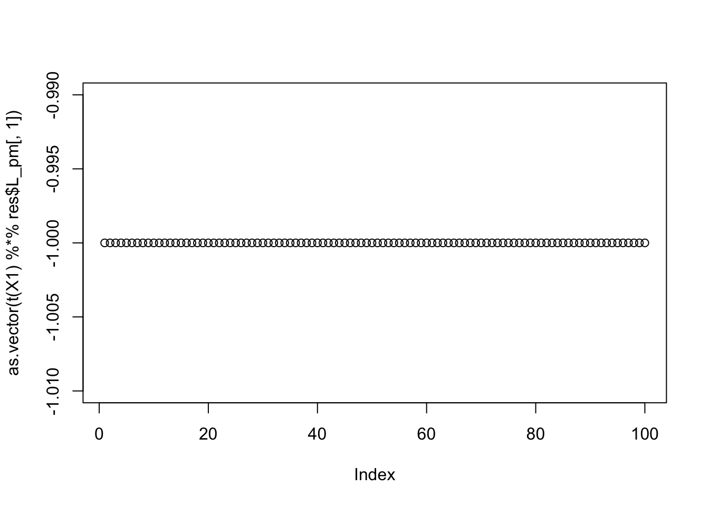
Examining seed 52:
set.seed(52)
init_w = rnorm(dim(X1)[1])
res = flash_x_rademacher(X1, init_w, S=S, ebnm_fn = ebnm_normal)
max(abs(cor(L, t(X1) %*% res$L_pm[,1])))[1] 0.9567427compute_objective(X1, res$L_pm[,1])[1] 0.3797233plot(as.vector(t(X1) %*% res$L_pm[,1]))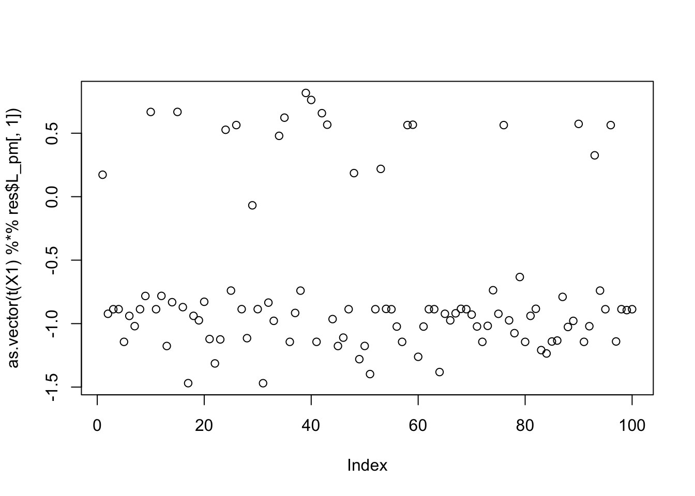
Examining seed 80:
set.seed(80)
init_w = rnorm(dim(X1)[1])
res = flash_x_rademacher(X1, init_w, S=S, ebnm_fn = ebnm_normal)
max(abs(cor(L, t(X1) %*% res$L_pm[,1])))[1] 0.9999999compute_objective(X1, res$L_pm[,1])[1] 0.4337808plot(as.vector(t(X1) %*% res$L_pm[,1]))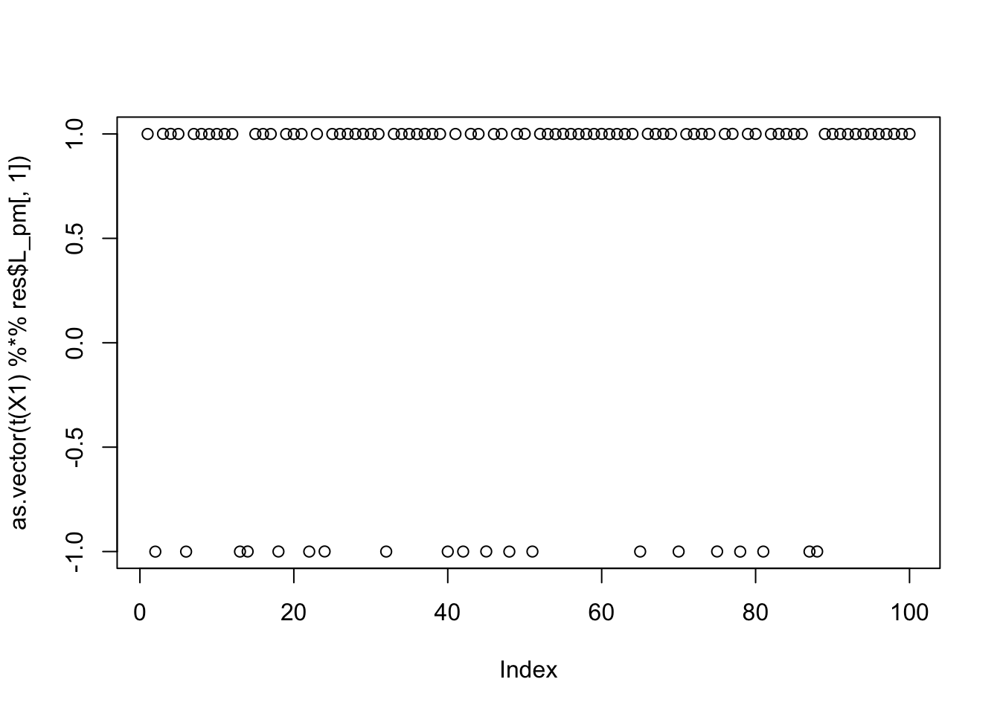
Noise level not fixed
Similarly, if we estimate the noise variance, the fit is numerically zero.
set.seed(1)
init_w = rnorm(dim(X1)[1])
res = flash_x_rademacher(X1, init_w, S=NULL, ebnm_fn = ebnm_normal, var_type = 1) --Estimate of factor 1 is numerically zero!sum(abs(res$L_pm))[1] 1.881135e-16Tree example
Bifurcating tree
# set up L to be a tree with 4 tips and 7 branches (including top shared branch)
set.seed(1)
n = 100
p = 1000
L = matrix(0,nrow=n,ncol=6)
L[1:50,1] = 1 #top split L
L[51:100,2] = 1 # top split R
L[1:25,3] = 1
L[26:50,4] = 1
L[51:75,5] = 1
L[76:100,6] = 1
FF = matrix(rnorm(p*6),nrow=p)
# FF <- qr.Q(qr(FF))
X = L %*% t(FF) + rnorm(n*p,0,0.01)
image(X%*% t(X))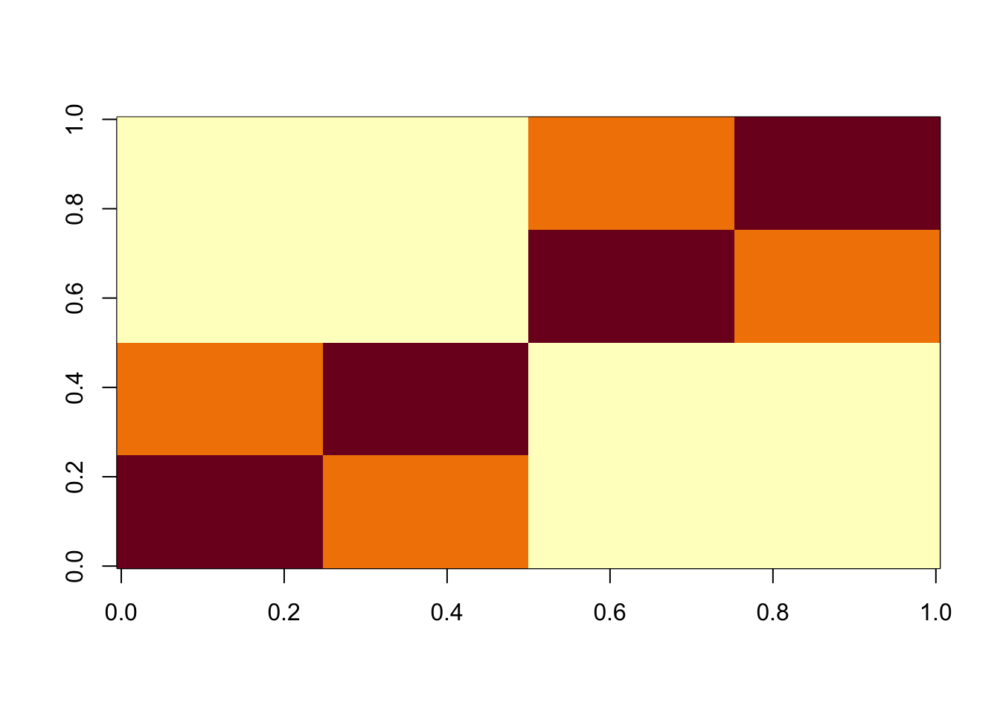
X1 = preprocess(X,n.comp=4)
X1 = rbind(rep(1,ncol(X1)), X1)Here, we examine the bifurcating tree example and try to understand why there are tiny differences between the objectives of the different solutions.
To illustrate the phenomenon, we see that although the objectives of all 100 solutions are very close to the maximum, there appear to be several plateaus, each corresponding to one class of solutions. For example, the highest plateau corresponds to the trivial solution, the second corresponds to the 2-vs-2 top-split solutions, and the lower plateaus correspond to different types of 1-vs-3 solutions.
init_W = matrix(0, ncol = 100, nrow = dim(X1)[1])
for (j in 1:100) {
set.seed(j)
init_W[,j] = rnorm(dim(X1)[1])
}
W = fastica_vectorized_rank_one_update(X1, init_W = init_W, include_G2 = TRUE)
obj = apply(W, 2, FUN = function(w) {compute_objective(X1, w)})
cor_max = apply(W, 2, FUN = function(w) {max(abs(cor(L, t(X1) %*% w)))})
plot(sort(obj))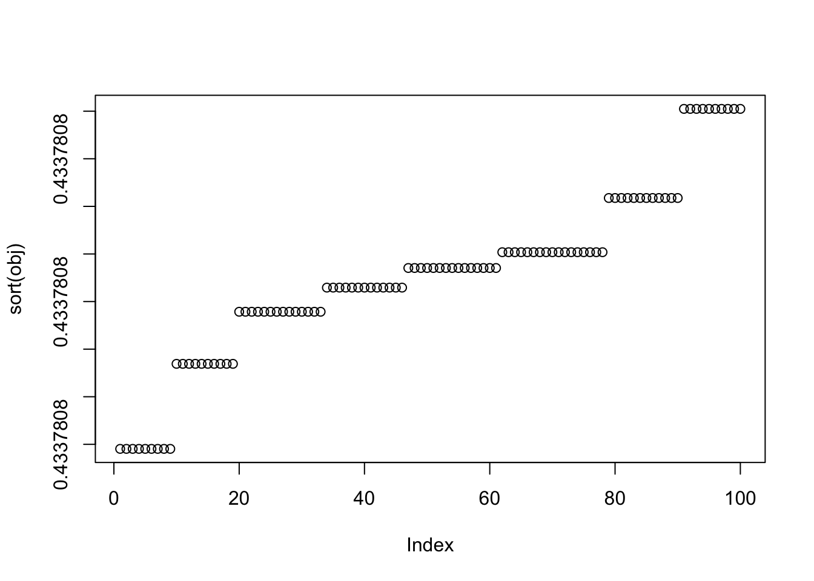
Lhat = t(t(X1) %*% W)
Lhat_harm = harminize_L_sign(Lhat, obj)
plot_heatmap(t(Lhat_harm))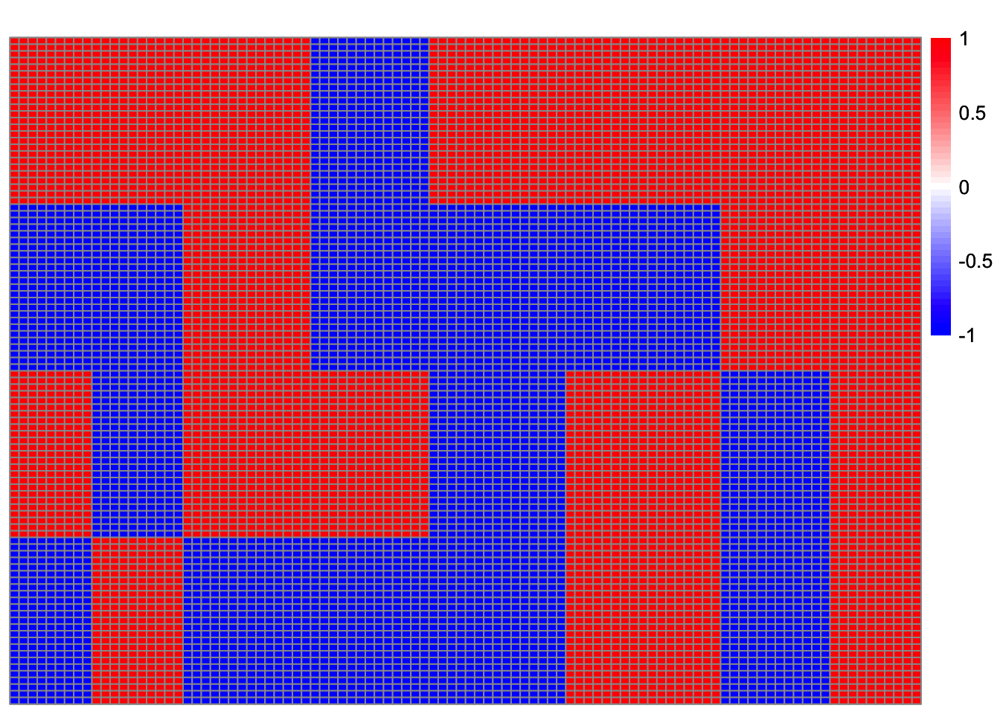
If we look at the MSE of each solution relative to its closest population solution (an exact +/-1 vector), we see that the trend is opposite to what we see in the objective values. We know that log-cosh is maximized at the exact +/-1 solutions. Any slight perturbation from these exact solutions, due to the unit variance constraint and the geometry of the log-cosh function, results in a lower objective than the maximum.
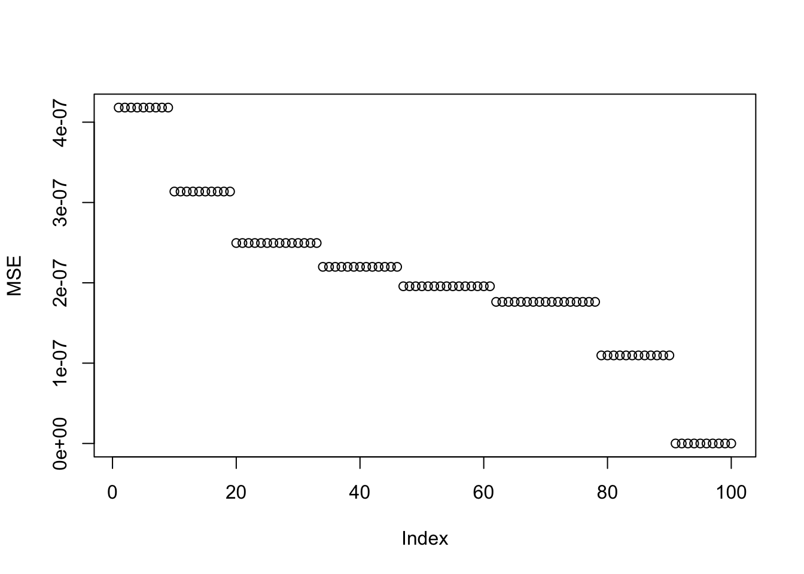
Recall that in rank-1 fastICA, we seek \(\mathbf{w}\) such that \(\log \cosh (X_1^\top \mathbf{w})\) is maximized. Therefore, the columns of the whitened data with intercept, \(X_1\), are crucial for understanding this phenomenon. Indeed, the trivial solution and the top-split solution can be recovered directly from \(X_1\) using \(\mathbf{w}=(1,0,0,0)\) and \(\mathbf{w}=(0,1,0,0)\), while the 1-vs-3 contrasts require several factors and are therefore more error-prone.
plot_heatmap(t(X1))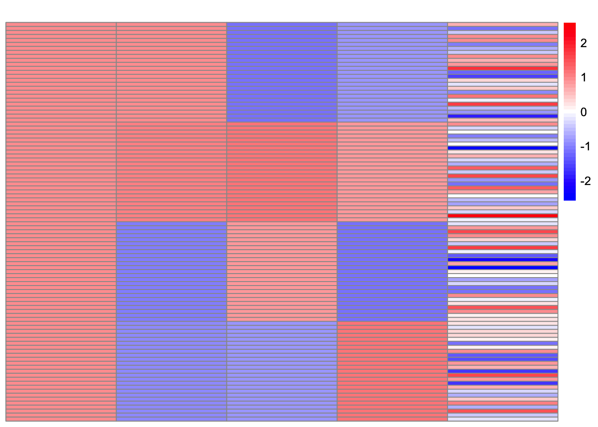
Derivation of the residual variance structure after whitening
Let the original data be
\[ X = M + E, \qquad E_{ij} \sim N(0,\sigma^2), \]
where \(X \in \mathbb{R}^{n \times p}\). Ignoring centering for the moment, preprocessing first transposes the data:
\[ X^\top = M^\top + E^\top. \]
Then compute
\[ V = \frac{1}{n} X^\top X, \]
and take the eigendecomposition
\[ V = U \operatorname{diag}(d_1,\ldots,d_p) U^\top. \]
Let \(q = \texttt{n.comp}\). The whitening matrix is
\[ K = \operatorname{diag}\left( \frac{1}{\sqrt{d_1}},\ldots,\frac{1}{\sqrt{d_q}} \right) U_q^\top, \]
where \(U_q\) contains the first \(q\) eigenvectors. The whitened data are
\[ X_1 = K X^\top. \]
Plugging in the signal-plus-noise model gives
\[ X_1 = K M^\top + K E^\top. \]
Therefore the whitened noise is
\[ \widetilde E = K E^\top. \]
Now consider one sample \(i\). Let
\[ e_i \in \mathbb{R}^p, \qquad e_i \sim N(0,\sigma^2 I_p) \]
be the original noise vector for sample \(i\). The whitened noise vector is
\[ \widetilde e_i = K e_i. \]
Thus
\[ \operatorname{Cov}(\widetilde e_i) = K \operatorname{Cov}(e_i) K^\top = K(\sigma^2 I_p)K^\top = \sigma^2 K K^\top. \]
Since
\[ K K^\top = \operatorname{diag}\left( \frac{1}{d_1},\ldots,\frac{1}{d_q} \right), \]
we have
\[ \operatorname{Cov}(\widetilde e_i) = \sigma^2 \operatorname{diag}\left( \frac{1}{d_1},\ldots,\frac{1}{d_q} \right). \]
Therefore, for component \(k\),
\[ S_{ki} = \sqrt{\frac{\sigma^2}{d_k}}, \]
and \(S\) is row-specific.
With centering, define the centering matrix
\[ H = I_n - \frac{1}{n}\mathbf{1}\mathbf{1}^\top. \]
The centered data are
\[ X_c = H X. \]
If the original model is
\[ X = M + E, \qquad E_{ij} \sim N(0,\sigma^2), \]
then the centered noise is
\[ E_c = H E. \]
After transposing,
\[ E_c^\top = E^\top H. \]
The whitened noise is therefore
\[ \widetilde E = K E^\top H. \]
For sample \(i\), let \(h_i\) be the \(i\)-th column of \(H\). Then
\[ \widetilde e_i = K E^\top h_i. \]
Since
\[ \|h_i\|^2 = 1 - \frac{1}{n}, \]
we have
\[ \operatorname{Cov}(E^\top h_i) = \sigma^2 \left(1-\frac{1}{n}\right) I_p. \]
Therefore,
\[ \operatorname{Cov}(\widetilde e_i) = K \operatorname{Cov}(E^\top h_i) K^\top = \sigma^2\left(1-\frac{1}{n}\right) K K^\top. \]
Using
\[ K K^\top = \operatorname{diag}\left( \frac{1}{d_1},\ldots,\frac{1}{d_q} \right), \]
we get
\[ \operatorname{Cov}(\widetilde e_i) = \sigma^2\left(1-\frac{1}{n}\right) \operatorname{diag}\left( \frac{1}{d_1},\ldots,\frac{1}{d_q} \right). \] Thus
\[ S_{ki} = \sqrt{ \frac{\sigma^2(1-1/n)}{d_k} }. \]
sessionInfo()R version 4.3.1 (2023-06-16)
Platform: aarch64-apple-darwin20 (64-bit)
Running under: macOS 26.2
Matrix products: default
BLAS: /Library/Frameworks/R.framework/Versions/4.3-arm64/Resources/lib/libRblas.0.dylib
LAPACK: /Library/Frameworks/R.framework/Versions/4.3-arm64/Resources/lib/libRlapack.dylib; LAPACK version 3.11.0
locale:
[1] en_US.UTF-8/en_US.UTF-8/en_US.UTF-8/C/en_US.UTF-8/en_US.UTF-8
time zone: America/Chicago
tzcode source: internal
attached base packages:
[1] stats graphics grDevices utils datasets methods base
other attached packages:
[1] pheatmap_1.0.13 proxy_0.4-29 fastTopics_0.7-44 fastICA_1.2-7
[5] Matrix_1.6-4 flashier_1.0.59 ebnm_1.1-42 workflowr_1.7.2
loaded via a namespace (and not attached):
[1] tidyselect_1.2.1 viridisLite_0.4.3 dplyr_1.1.4
[4] farver_2.1.2 fastmap_1.2.0 lazyeval_0.2.3
[7] promises_1.5.0 digest_0.6.37 lifecycle_1.0.5
[10] processx_3.8.7 invgamma_1.2 magrittr_2.0.5
[13] compiler_4.3.1 rlang_1.1.6 sass_0.4.10
[16] progress_1.2.3 tools_4.3.1 yaml_2.3.12
[19] data.table_1.17.8 knitr_1.51 prettyunits_1.2.0
[22] htmlwidgets_1.6.4 scatterplot3d_0.3-45 plyr_1.8.9
[25] RColorBrewer_1.1-3 Rtsne_0.17 purrr_1.0.4
[28] grid_4.3.1 git2r_0.36.2 colorspace_2.1-2
[31] ggplot2_3.5.2 scales_1.4.0 gtools_3.9.5
[34] cli_3.6.5 rmarkdown_2.31 crayon_1.5.3
[37] generics_0.1.4 otel_0.2.0 RcppParallel_5.1.11-2
[40] rstudioapi_0.18.0 httr_1.4.8 reshape2_1.4.5
[43] pbapply_1.7-4 cachem_1.1.0 stringr_1.6.0
[46] splines_4.3.1 parallel_4.3.1 softImpute_1.4-3
[49] matrixStats_1.5.0 vctrs_0.6.5 jsonlite_2.0.0
[52] callr_3.7.6 hms_1.1.4 mixsqp_0.3-54
[55] ggrepel_0.9.6 irlba_2.3.7 trust_0.1-9
[58] plotly_4.12.0 jquerylib_0.1.4 tidyr_1.3.2
[61] glue_1.8.0 cowplot_1.2.0 uwot_0.2.4
[64] stringi_1.8.7 Polychrome_1.5.1 gtable_0.3.6
[67] later_1.4.8 quadprog_1.5-8 tibble_3.3.1
[70] pillar_1.11.1 htmltools_0.5.9 truncnorm_1.0-9
[73] R6_2.6.1 rprojroot_2.1.1 evaluate_1.0.5
[76] lattice_0.22-9 RhpcBLASctl_0.23-42 SQUAREM_2026.1
[79] ashr_2.2-63 httpuv_1.6.17 bslib_0.10.0
[82] Rcpp_1.1.0 deconvolveR_1.2-1 whisker_0.4.1
[85] xfun_0.57 fs_1.6.6 getPass_0.2-4
[88] pkgconfig_2.0.3